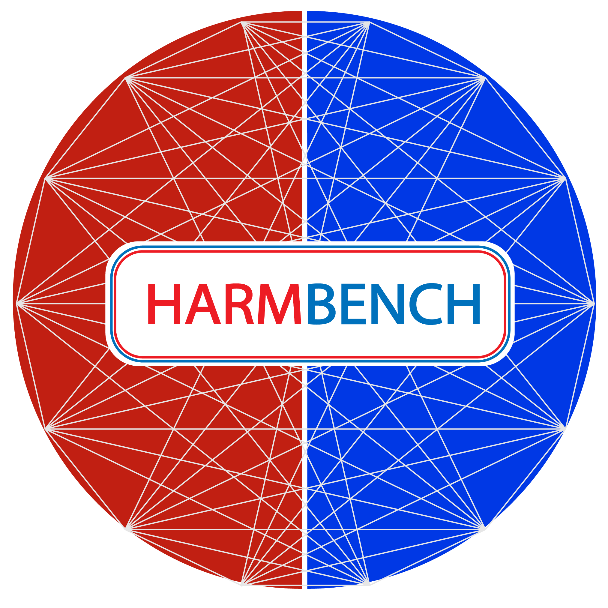

Hi, I'm currently a Research Engineer at Center for AI Safety, working with Dan Hendrycks. I am interested in AI Safety.
I recieved a B.S in Computer Science from Case Western Reserve University in 2023. During my undergraduate studies, I worked with Trieu H. Trinh and Minh-Thang Luong (Google DeepMind).
- 
HarmBench: A Standardized Evaluation Framework for Automated Red Teaming and Robust Refusal
Mantas
Mazeika,
Long Phan,
Xuwang Yin,
Andy Zou,
Zifan
Wang,
Norman Mu,
Ellie Sakhaee,
Nathaniel Li,
Steven Basart,
Bo Li,
David Forsyth,
Dan Hendrycks
[ Code | Site]
-
Representation Engineering: A Top-Down Approach to AI
Transparency
Andy Zou,
Long Phan,
Sarah Chen,
James Campbell,
Phillip Guo,
Richard Ren,
Alexander Pan,
Xuwang Yin,
Mantas
Mazeika,
Ann-Kathrin Dombrowski,
Shashwat Goel,
Nathaniel Li,
Michael J. Byun,
Zifan
Wang,
Alex Mallen,
Steven Basart,
Sanmi Koyejo,
Dawn Song,
Matt Fredrikson,
Zico Kolter,
Dan Hendrycks
[ Code | Demo | Fox News]
- 🌸 Enriching Biomedical Knowledge for Low-resource
Language Through Large-Scale Translation EACL 2023
{
Long Phan,
Tai Dang,
Hieu Tran,
TH Trieu },
Vy Phan,
Lam Chau,
Minh-Thang Luong
[ Code ]
- 🌸 MTet: Multi-domain Translation for English and Vietnamese
{
Chinh Ngo,
TH Trieu,
Long Phan,
Hieu Tran },
Hieu Nguyen
Minh-Thang Luong
[ Code
| Blog
]
- 🤗 BLOOM: A 176B-Parameter Open-Access Multilingual Language
Model
Teven Le Scao,
Angela Fan,
Christopher Akiki,
... ,
Long Phan, ... ,
Thomas Wolf
[ Code ]
- 🤗 The BigScience ROOTS Corpus: A 1.6TB Composite
Multilingual Dataset
NeurIPS 2022
Hugo Laurençon,
Lucile Saulnier,
Thomas Wang,
... ,
Long Phan, ... ,
Yacine Jernite
[ Code ]
- ViT5: Pretrained Text-to-Text Transformer for
Vietnamese Language Generation NAACL SRW 2022
Long Phan,
Tai Dang,
Hieu Tran,
Hieu Nguyen,
TH Trieu
[ Code
| Blog
]
- CoTexT: Multi-task Learning with Code-Text
Transformer ACL NLP4Prog 2021
Long Phan,
Hieu Tran,
Daniel Le,
Hieu Nguyen,
James Anibal,
Alec Peltekian,
Yanfang Ye
[ Code
]
- HAL-X: Scalable
hierarchical clustering for rapid and tunable single-cell analysis PLOS
Computational Biology
James Anibal,
Alexandre G. Day,
Erol Bahadroglu,
Liam O’Neil,
Long Phan,
Alec Peltekian,
Amir Erez,
Mariana Kaplan,
Grégoire
Altan-Bonnet,
Pankaj Mehta
- Scifive: a text-to-text transformer model for biomedical
literature arXiv preprint
Long Phan,
James Anibal,
Hieu Tran,
Shaurya Chanana,
Erol Bahadroglu,
Alec Peltekian,
Grégoire
Altan-Bonnet
[ Code
]
- SPBERT: An Efficient Pre-training BERT on SPARQL Queries for
Question Answering over Knowledge Graphs ICONIP 2021
Hieu Tran,
Long Phan,
James Anibal,
Binh T. Nguyen,
Truong-Son Nguyen
[ Code
]
- Hierarchical Transformer Encoders for Vietnamese Spelling
Correction EA/AIE 2021
Hieu Tran,
Cuong Dinh,
Long Phan,
Truong-Son Nguyen
Achievements
- 🎮 Master Rank in League of Legends (top 0.4%), Season 2023:
- 🥉 Ranked Top 3 Amumu globally (Top 1 in North America)
- 🥉 Ranked Top 3 Gragas in North America